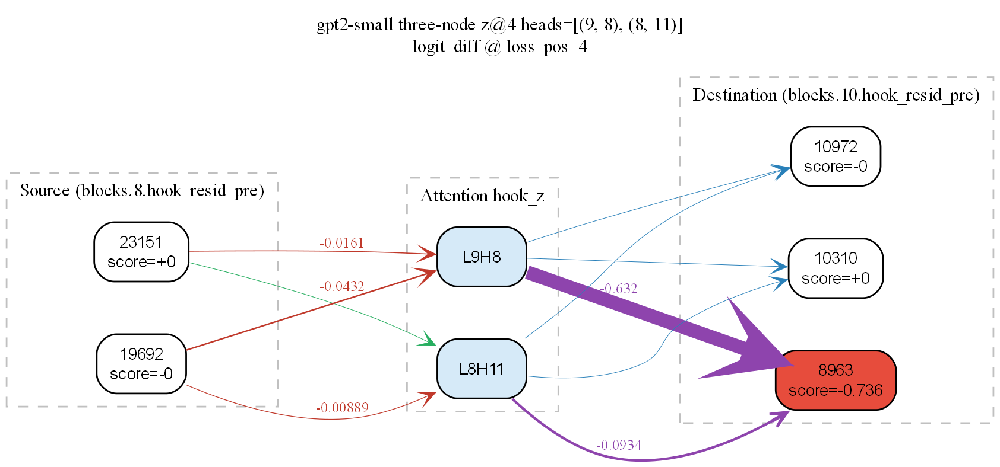
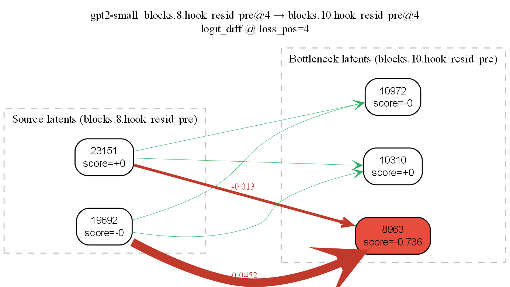
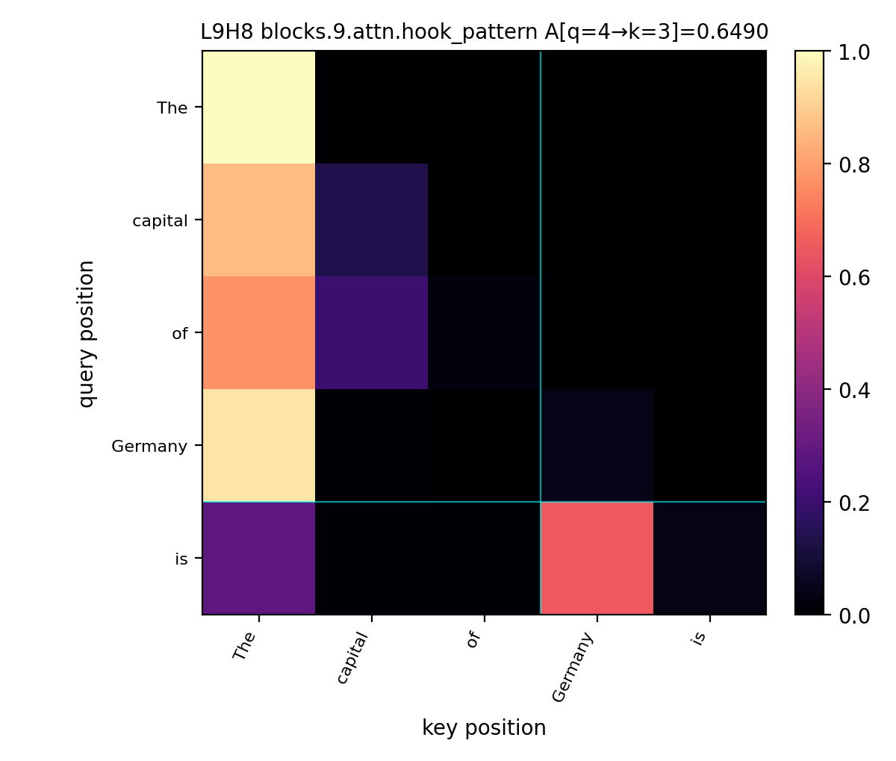

A causal-intervention toolkit for mechanistic interpretability: combine activation patching (clean → corrupt swaps over hooks, heads, positions) with SAE attribution and circuit-graph extraction to find which components actually carry a behavior.

For "The capital of Germany is" on gpt2-small, direct resid_pre → resid_pre edges between the layer-8 country latents and the layer-10 bottleneck latent are near-zero (the two strongest direct edges are −0.045 and −0.013). Inserting L9H8 as a middle node closes the circuit: at the prediction position is, L9H8 reads Germany with attention weight 0.649, and the resulting L9H8 → 8963 edge in the SAE-attribution graph is −0.632 — more than an order of magnitude larger than any direct-path edge. Factual recall here is an attention-mediated relay, not a same-position residual hand-off. The discovery (experimental) section below shows how to reproduce both views.
causal_patcher/ is the patching primitive: PatchTarget selects a hook / head / position site, and ExperimentRunner (or BatchExperimentRunner for left-padded batches) runs a clean / corrupt pair and overwrites the corrupt activation with the clean one. discovery/ layers SAE attribution, KL-budget pruning, and Graphviz circuit export on top of those primitives. Both packages share the same TransformerLens HookedTransformer and hook-name conventions.
Scope. Validated on gpt2-small with the gpt2-small-res-jb residual-stream SAEs from SAELens. discovery/ is experimental and is not yet shipped in the built wheel.
Install from the repository root:
pip install -e "."
# Optional: notebook + table deps for examples
pip install -e ".[demo]"
Patch a single attention head (L9H8) from a clean run into a corrupt run and read off the recovery:
from transformer_lens import HookedTransformer
from causal_patcher import ExperimentRunner, PatchTarget
model = HookedTransformer.from_pretrained("gpt2-small")
runner = ExperimentRunner(
model,
clean_prompt="The capital of France is",
corrupt_prompt="The capital of Germany is",
clean_answer_token=model.to_single_token(" Paris"),
corrupt_answer_token=model.to_single_token(" Berlin"),
)
patched_logits = runner.patch_clean_into_corrupt(
PatchTarget(kind="attn_head_z", layer=9, head=8),
)
recovery = runner.logit_diff(patched_logits) - runner.logit_diff(runner.corrupt_logits)
For multiple prompts at once (left-padded; P_clean and P_corrupt may differ):
from causal_patcher import BatchExperimentRunner
batched = BatchExperimentRunner(
model,
clean_prompts=["The capital of France is", "The capital of Italy is"],
corrupt_prompts=["The capital of Germany is", "The capital of Spain is"],
clean_answers=[" Paris", " Rome"],
corrupt_answers=[" Berlin", " Madrid"],
)
batched.run_baselines()
patched_logits = batched.patch_clean_into_corrupt(
PatchTarget(kind="attn_head_z", layer=9, head=8),
)
causal_patcher.viz plots logit(clean answer) − logit(corrupt answer) on the patched corrupt run. With the default RdBu_r scale (centered at zero):
| Color | Meaning |
|---|---|
| Red / warm | Recovery — the patch increased that score; the run looks more like the clean-answer side of the comparison. |
| Blue / cool | Suppression — the patch decreased the score; the readout moved toward the corrupt answer or away from the clean one. |
| Near white | little effect. |
A longer guide (layer × position vs. layer × head, baselines, caveats) is in docs/heatmap.md.
plot_layer_position_patching labels each column with decoded subwords from the corrupt prompt by default. For custom grids, pass x_tick_labels=viz.position_tick_labels(runner, "corrupt") to plot_heatmap, or which="clean" to align the axis with the clean sequence.
Code under discovery/ builds on a TransformerLens HookedTransformer with hook-mounted SAE-style encode_fn / decode_fn callables. You supply the SAE (or a toy linear stand-in); the library wires residual-aware reconstruction at the hook, attribution, and optional KL-budget pruning.
| Module | Role |
|---|---|
discovery.sae_scout |
SAE weight loading/cache helpers, reconstruct_activation, feature_capture |
discovery.attribution |
feature_act_grad_scores, feature_attribution_pass, integrated gradients, residual-channel score + completeness helpers |
discovery.pruner |
prune_sae_circuit (τ-KL) and prune_sae_circuit_budget (KL budget, optional drift gate, optional IG ranking) |
discovery.labels |
Neuronpedia feature labels + JSON cache |
discovery.circuit_graphviz |
Bipartite SAE latent graphs (DOT) + cross-hook edge weights (scripts/sae_crosslayer_circuit_dot.py) |
The DOT export from discovery.circuit_graphviz measures cross-layer influence in two complementary views. On factual recall ("The capital of Germany is"):
| Direct bipartite | Tripartite |
|---|---|
 |
|
resid_pre → resid_pre between two layers at different token positions yields near-zero edges, so factual recall is not a same-position residual hand-off. |
Inserting L9H8 as a middle node connects the circuit: layer-8 country latents → mover head (L9H8) → layer-10 bottleneck latent. |
Baseline: run scripts/sae_crosslayer_circuit_dot.py to see where the direct residual path is empty.
Identify: rank candidate mover heads with scripts/find_mover_heads.py (e.g. L9H8).
Verify: plot attention with scripts/visualize_attention_heads.py and check the head reads from the subject token ( Germany) at the query position ( is).

For "The capital of Germany is" on gpt2-small, L9H8 at query position 4 ( is) attends to key position 3 ( Germany) with weight 0.649 — vs. 0.043 on its own position and ≤0.014 on the structural tokens. That's the "ground truth" the DOT edge in step 4 then rests on.
Map: re-run the DOT script with --three-node --middle-head L H to emit the latent → head → latent graph.
Imports: use an editable install from the repo root (pip install -e ".") and run with working directory / PYTHONPATH including the repo so import discovery resolves. The built wheel currently ships causal_patcher only; discovery is not yet listed as an installable package in the wheel.
Ranking shape: attribution returns a dense score vector of length n_features (full SAE width at one sequence position). Large dictionaries (e.g. 128k latents) mean full-length tensors per pass.
scripts/benchmark_discovery_cost.py — rough timing for attribution/IG paths on a tiny HookedTransformer + linear SAE stub; optional integrated-gradients and completeness flags.scripts/test_neuronpedia_label.py — smoke test for label fetch/cache (see discovery.labels and your environment/API setup).scripts/sae_crosslayer_circuit_dot.py — Graphviz DOT bipartite graph between two SAE hooks (optional --src-seq-pos / --dst-seq-pos / --loss-seq-pos).scripts/find_mover_heads.py — rank attention heads by marginal clean→corrupt hook_z patching effects.scripts/visualize_attention_heads.py — plot hook_pattern for nominated heads (PNG export; optional query/key highlight).pytest
tests/ currently focus on causal_patcher (including viz). Discovery is exercised mainly via scripts and your own notebooks.
notebooks/demo_factual_recall.ipynb — factual recall (Eiffel/Paris vs Colosseum/Rome) on gpt2-small with resid_pre and attn_head_z sweeps.notebooks/demo_batched_factual_recall.ipynb — batched / left-padded factual recall using BatchExperimentRunner.docs/heatmap.md.